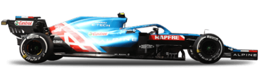
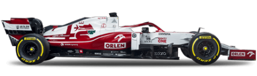

F1 Teams 2021

Mercedes-AMG Petronas F1 Team
Base Brackley, United Kingdom Team Chief Toto Wolff Technical Chief Mike Elliott Chassis W12 Power Unit Mercedes First Team Entry 1970 World Championships 7 Highest Race Finish 1 (x113) Pole Positions 125 Fastest Laps 84


Red Bull Racing Honda
Base Milton Keynes, United Kingdom Team Chief Christian Horner Technical Chief Pierre Waché Chassis RB16B Power Unit Honda First Team Entry 1997 World Championships 4 Highest Race Finish 1(x74) Pole Positions 72 Fastest Laps 72


McLaren F1 Team
Base Woking, United Kingdom Team Chief Andreas Seidl Technical Chief James Key Chassis MCL35M Power Unit Mercedes First Team Entry 1966 World Championships 8 Highest Race Finish 1 (x183) Pole Positions 156 Fastest Laps 160


Scuderia Ferrari Mission Winnow
Base Maranello, Italy Team Chief Maranello, Italy Technical Chief Enrico Cardile / Enrico Gualtieri Chassis SF21 Power Unit Ferrari First Team Entry 1950 World Championships 16 Highest Race Finish 1 (x239) Pole Positions 223 Fastest Laps 253

Alpine F1 Team
Base Enstone, United Kingdom Team Chief Davide Brivio Technical Chief Pat Fry / Remi Taffin Chassis A521 Power Unit Renault First Team Entry 1986 World Championships 2 Highest Race Finish 1 (x21) Pole Positions 20 Fastest Laps 15

Scuderia AlphaTauri Honda
Base Faenza, Italy Team Chief Franz Tost Technical Chief Jody Egginton Chassis AT02 Power Unit Honda First Team Entry 1985 World Championships N/A Highest Race Finish 1 (x2) Pole Positions 1 Fastest Laps 2


Aston Martin Cognizant F1 Team
Base Silverstone, United Kingdom Team Chief Otmar Szafnauer Technical Chief Andrew Green Chassis AMR21 Power Unit Mercedes First Team Entry 2018 World Championships N/A Highest Race Finish 1 (x1) Pole Positions 1 Fastest Laps N/A


Williams Racing
Base Grove, United Kingdom Team Chief Jost Capito Technical Chief François-Xavier Demaison Chassis FW43B Power Unit Mercedes First Team Entry 1978 World Championships 9 Highest Race Finish 1 (x114) Pole Positions 129 Fastest Laps 133


Alfa Romeo Racing ORLEN
Base Hinwil, Switzerland Team Chief Frédéric Vasseur Technical Chief Jan Monchaux Chassis C41 Power Unit Ferrari First Team Entry 1993 World Championships N/A Highest Race Finish 1 (x1) Pole Positions 1 Fastest Laps 5

Uralkali Haas F1 Team
Base Kannapolis, United States Team Chief Guenther Steiner Technical Chief Simone Resta Chassis VF-21 Power Unit Ferrari First Team Entry 2016 World Championships N/A Highest Race Finish 4 (x1) Pole Positions N/A Fastest Laps 2